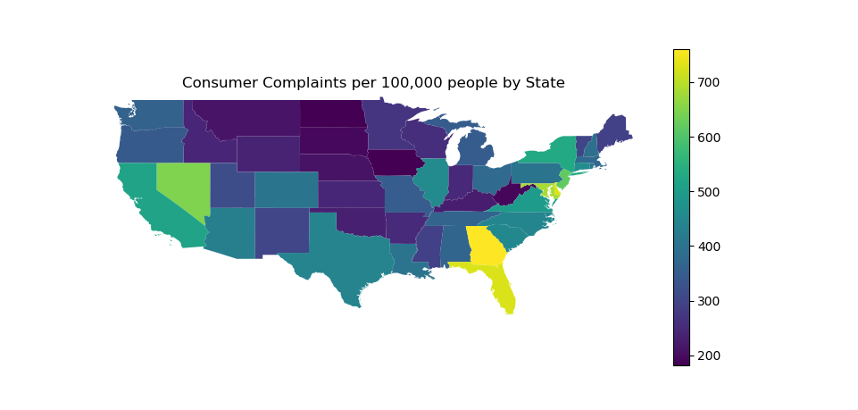
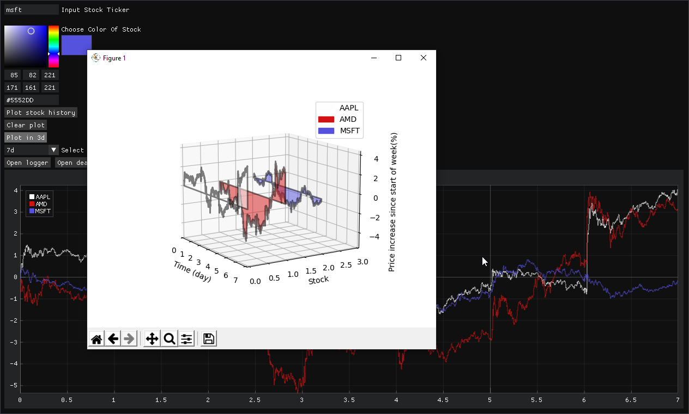
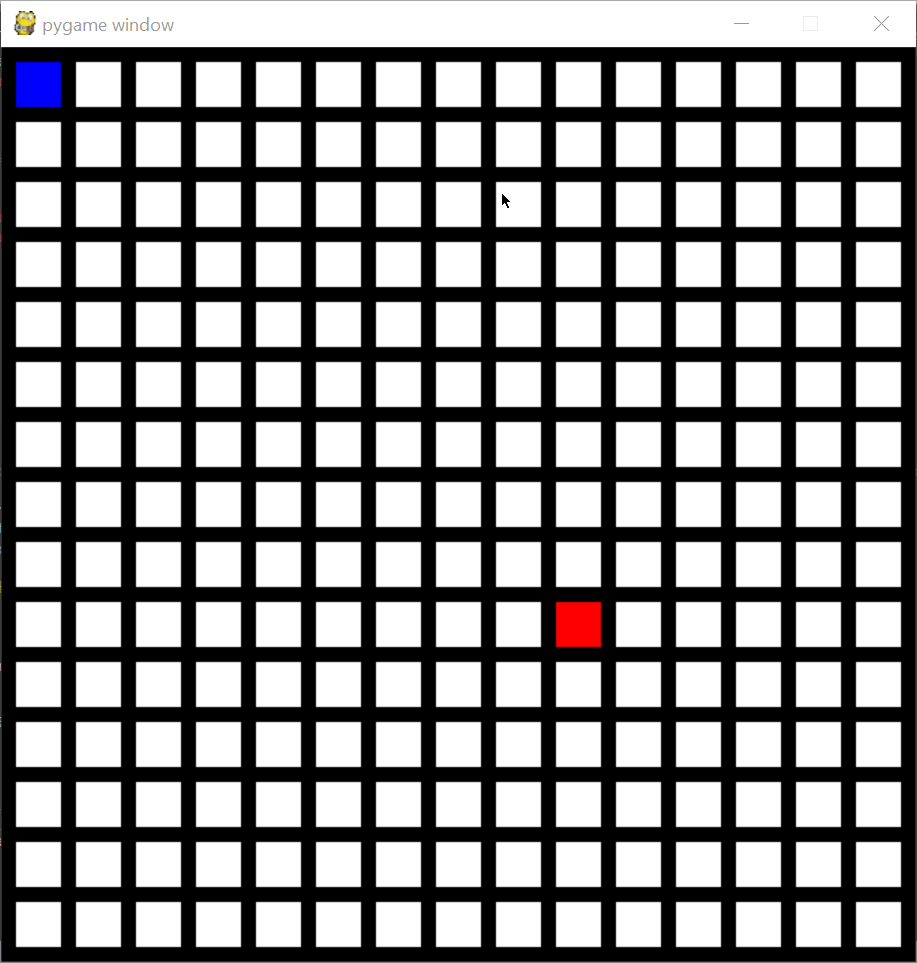

I have an eye for data and always want to see what the analysis of it will look like.
The amount of things you can do with both valuable data and data others don't believe valuable
is incredible and always keeps me searching for more. I enjoy solving
all kinds of problems and working with others to make great things that improve our world.
Skills
Python: Used for 4 years personally
C++/C: Learned for 3+ years off and on
Autohotkey: Used for 4 years personally
Linux/Command line tools: Used for 2 years personally
Projects
Graphing Consumer Complaints
Using python with the pandas, matplotlib and requests modules I got 33 million lines of consumer complaint data
from the cfpb and graphed it on a map of the U.S. by per capita complaints.
Some challenges in this project was working with a "relatively" large data set of a 1.1GB csv file
and mapping out the data as this was the first time I had done a map visualization.

Zoomberg Terminal

This was a fun project for a visualization competition, I did not win but learned
a lot in its creation. Scraped stock data and plotted multiple stocks on a line plot as well as plotting
multiple stocks in a 3D view. This project was difficult as it was my first time working with 3D and 3D is always more
complicated. Most of the difficulties here were with learning a new gui library, DearPyGui,
for this project.
Pathfinding Visualization
Using the pygame game engine I created a pathfinding algorithm visualization that allows
you to draw your own maze for the computer to solve.

Life of Conway
Used the framework that I made for the pathfinding visualization in order to create
Conway's Game of Life in pygame.